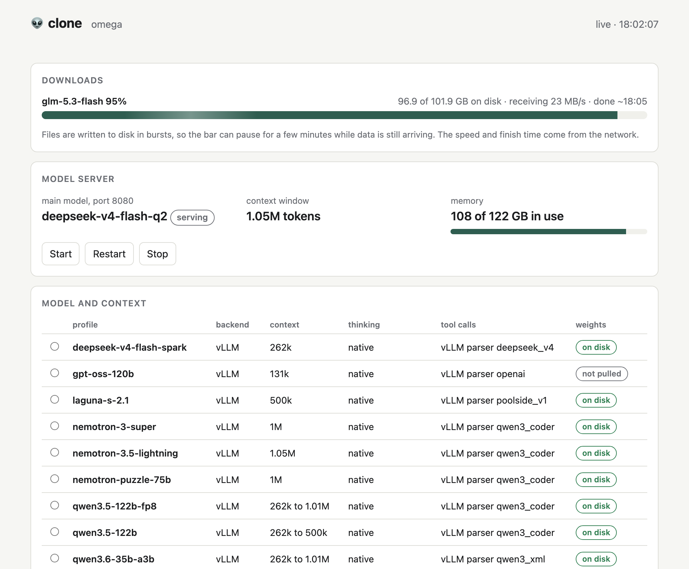

clone
A coding agent that runs on one DGX Spark: a model server with as much context as the box can hold, and fable, a terminal agent with tool calling that works the way Claude Code does.
It aims at three things at once. A context window of 500k tokens or more, thinking before the model acts, and tool calls that work. Everything lives in one directory on both machines.
It is not a frontier model. The open models that fit in 122 GiB are slower and less sharp than a hosted one, so most of the work here went into finding out which of them can be trusted with a long prompt.
What is in it
The model server
vLLM in NVIDIA's container, or llama.cpp for models whose release weights are larger than the machine, with one profile per model: weights, window, parsers and memory share. When the window asked for does not fit, the launcher takes the largest one that does and says so. Every model runs at its deepest reasoning setting unless a request asks for less.
fable
A terminal agent in Python. Shell, file read, write and edit, search, web fetch, a task list and read-only subagents, behind a permission check. Five thinking levels, max by default, translated into whatever each model family calls them.
A control page
Served from the Spark with the standard library. What is running, memory, downloads with a finish time, switching model and window, the results so far, and the commands that connect Claude Code or fable from another machine.

What was measured
A long window is only worth having if the model can still find things in it. The acceptance test fills the prompt with numbered records, thousands of lines like this one:
Record 9337: the access code for locker 9337 is 836244.
It then asks for three of the codes, one near the start, one in the middle and one near the end, and wants them back through a tool call. A size passes when the call is made and all three codes are right. It is a harsh test. It is also what a long window is for. Each answer gets 32,768 tokens for its thinking and the call, which is what fable allows. Until 14 October it was 4,000, and the models measured before then are being measured again.
Results from the same Spark, all with thinking on, ranked by how far each model stays exact: the largest prompt it answered with all three codes right, with every smaller prompt right as well. Ties go to the largest prompt with at most one code wrong at each size, then to the share of codes right, then to decode speed. Sizes count to the nearest 50k, since the same step comes out a few thousand tokens apart from one tokenizer to the next. Read-in is how fast the first recall prompt was read.
| Model | Window served | Exact up to | Codes right, by prompt size | Thinks, tools | Decode | Read-in |
|---|---|---|---|---|---|---|
| DeepSeek V4 Flash284B, 13B active, 3-bit GGUF, 104 GB | 857k llama.cpp, 16-bit cache, reasoning effort max |
805k | 61k 3/3 255k 3/3 501k 3/3 805k 3/3 | yes | 19 tok/s | 325 tok/s |
| DeepSeek V4 Flash, 2-bit284B, 13B active, 2-bit GGUF, 97 GB | 1.05M llama.cpp, 16-bit cache, reasoning effort max |
501k | 61k 3/3 255k 3/3 501k 3/3 751k 2/3 985k 3/3 | yes | 20 tok/s | 320 tok/s |
| Qwen3.8-27B, FP8 cachedense 27B, NVFP4, 22 GB | 1.01M vLLM, stretched from 256k, FP8 cache |
519k | 93k 3/3 253k 3/3 519k 3/3 986k 2/3 | yes | 12 tok/s | 918 tok/s |
| DeepSeek V4 Flash, REAP 150B150B of 284B kept, 13B active, FP4 experts, 85 GB | 1.05M llama.cpp, 16-bit cache, reasoning effort max |
501k | 61k 3/3 255k 3/3 501k 3/3 751k 2/3 985k 2/3 | yes | 16 tok/s | 462 tok/s |
| Qwen3.8-27B, 16-bit cachedense 27B, NVFP4, 22 GB | 950k stretched from 256k, 16-bit cache |
507k | 97k 3/3 245k 3/3 507k 3/3 | yes | 12 tok/s | 920 tok/s |
| Qwen3.5-122B-A10B, FP8 cache122B, 10B active, NVFP4, 84 GB | 1.01M vLLM, stretched from 256k, FP8 cache |
519k | 93k 3/3 253k 3/3 519k 3/3 760k 1/3 960k 0/3 | yes | 14 tok/s | 1,030 tok/s |
| DeepSeek V4 Flash, REAP 200B200B of 284B kept, 13B active, 3-bit GGUF, 93 GB | 1.05M llama.cpp, 16-bit cache, reasoning effort max |
255k | 61k 3/3 255k 3/3 501k 2/3 751k 2/3 985k 3/3 | yes | 17 tok/s | 360 tok/s |
| Qwen3.5-122B-A10B122B, 10B active, NVFP4, 84 GB | 500k vLLM, stretched from 256k, 16-bit cache |
253k | 93k 3/3 253k 3/3 492k 2/3 | yes | 14 tok/s | 1,042 tok/s |
| Qwen3.8-Flash-Next125B, 6B active, NVFP4, 133 GB | 524k stretched from 256k, FP8 cache; past 256k it returns the neighbouring record |
253k | 93k 3/3 253k 3/3 411k 2/3 505k 2/3 516k 2/3 | yes | 44 tok/s | 2,650 tok/s |
| Qwen3.6-35B-A3B35B, 3B active, NVFP4, 23 GB | 1.01M vLLM, stretched from 256k, 16-bit cache |
253k | 93k 3/3 253k 3/3 519k 2/3 1M 1/3 | yes | 77 tok/s | 2,897 tok/s |
| Nemotron 3.5 Lightning30B, 3B active, NVFP4, 22 GB | 1.05M native window, FP8 cache |
102k | 102k 3/3 232k 1/3 482k 1/3 986k 1/3 | yes | 136 tok/s | 1,290 tok/s |
| DeepSeek V4 Flash, 2-bit with DSpark284B, 13B active, 2-bit GGUF and an 8-bit draft, 108 GB | 131k llama.cpp, 16-bit cache, reasoning effort max |
55k | 55k 3/3 | yes | 44 tok/s | 326 tok/s |
| Laguna S 2.1118B, 8B active, NVFP4, 100 GB | 500k trained to 1M, 500k fits here, FP8 cache; thinks on some requests only |
none | 93k 2/3 253k 2/3 411k 1/3 | no thinking, tool loop | 12 tok/s | 1,520 tok/s |
| Nemotron 3 Super120B, 12B active, NVFP4, 80 GB | 1M native window, FP8 cache |
none | 93k 2/3 235k 1/3 489k 1/3 | yes | 16 tok/s | 1,045 tok/s |
| Nemotron-Labs-3 Puzzle 75B75B, 9B active, NVFP4, 54 GB | 1M vLLM, 16-bit cache |
none | 89k 2/3 253k 1/3 521k 1/3 760k 0/3 950k 0/3 | yes | 20 tok/s | 1,565 tok/s |
| Kimi Linear 48B-A3B48B, 3B active, 8-bit GGUF, 52 GB | 1.05M llama.cpp, 16-bit cache |
none | 61k 0/3 256k 2/3 502k 0/3 751k 0/3 986k 0/3 | no thinking, tool loop | 58 tok/s | 1,112 tok/s |
| MiMo-V2.6-Flash, REAP 50%half the experts kept, FP4 experts, 92 GB | 1M llama.cpp, 8-bit cache |
none | 89k 0/3 254k 0/3 521k 0/3 760k 0/3 954k 0/3 | no thinking, no tool loop | 14 tok/s | 590 tok/s |
The same numbers as data: results.json. The control page on the Spark shows this table too, with each new run added as it finishes.
Every model in the table but MiMo calls a tool and finishes the tool loop at the window listed. Laguna and MiMo think on some requests only, Kimi Linear has no thinking mode, and the rest think on every request. Recall is where they part ways, and how they fail matters as much as where. The Nemotron models return a code from the wrong part of the prompt. Puzzle 75B, which NVIDIA cut down from Super and distilled at long context, mixes up records whose numbers share digits, giving locker 961's code for locker 9611, and past 750k it stopped calling the tool. Flash-Next, past the length it was trained for, returns the record next door:
Asked for locker 9337, it answered with the code for locker 9338.
Asked for locker 137, it answered with the code for locker 37, and quoted the line it believed it had read.
The Qwen models are trained to 262,144 tokens, and their cards document a way to stretch that. What the stretch does depends on the model. The dense 27B stayed exact at twice its trained length. The 122B held to twice its trained length too, then got one code of three at three times it and none at nearly four. Flash-Next, which attends sparsely, loses its place. An older model, Qwen3-Coder-Next, stopped calling tools altogether. So a stretched window has to be tested on the model that will use it.
Where that leaves the three targets: DeepSeek V4 Flash, trained to a million tokens and run here at 3 bits, is the one configuration that has been exact past 600k. Its template tells it to reason at length only when the request asks for an effort of high or max, and the server now asks for max. At max it was exact at 61k, 255k, 501k and 805k, and no answer ran past 600 tokens. At its default effort it was exact to 255k. At 502k it wrote down the wrong code for the middle locker while thinking and never called the tool, even with 32,768 tokens to do it in, and two more tries at that size got one and two of three. The max run had an 857k window, smaller than before because downloads were holding memory. With the 10 GB that every model now has to leave free, the 3-bit build would get far less, so the 2-bit build is the one measured again. At 2 bits it had room for all 1,048,576 tokens and got every code at 985k, the largest prompt any model here has answered exactly. At 751k, though, it gave the code for locker 20999 when asked for locker 20909, quoted the record with that code, said it would check, and quoted it the same way again. Pruned to 150B, it also fit the whole window and was exact to 501k, then got two of three at 751k and at 985k, each time with a code from a record thousands of lines away. Pruned to 200B at 3 bits, it got every code at 985k but missed one at 501k and one at 751k, so it counts as exact only to 255k. DSpark, DeepSeek's draft model, more than doubled the 2-bit build's decode speed, to 44 tokens a second, but its 11 GB left room for only a 131k window. Qwen3.8-27B is exact to 519k with an FP8 cache, and it is slow. At 986k it got two codes of three: asked for locker 34548, it gave the code for locker 34458 and quoted the line as if it had read it. It took 46 minutes to read that prompt. Qwen3.5-122B-A10B, stretched to a million with an FP8 cache, was exact to 519k, then got one code of three at 760k and none at 960k. Qwen3.6-35B-A3B is the fast one, at 77 tokens a second, and exact to 253k, with two of three at 519k and one at a million. Flash-Next is the model that suits the hardware, at 44 to 49 tokens a second, and it is exact inside 256k. Nothing has yet been exact at every size up to a million.
MiMo-V2.6-Flash, cut to half its experts with FP4 experts, had room for its whole million-token window and got no code right at any size. At 89k its reasoning found two of the three codes and misread the first, and then it sent the three locker numbers as the answer. At 254k it quoted all three records with the wrong codes. Past 500k it lost the task altogether: it listed codes until its 32,768 tokens ran out, wrote strings of made-up numbers, and at 954k counted from one for three hours without calling the tool. Half the experts is a deep cut, and nobody has published evaluations of this build, so this says little about the whole model.
Kimi Linear, which has no thinking mode, also had room for its whole window, with 57 GB to spare, and is quick at 58 tokens a second. It answered at once at every size and called the tool correctly each time. At 256k it got two codes of three, giving the code for locker 2168 when asked for locker 7168. At every other size it sent the three locker numbers back as the codes.
Being measured on the Spark now, with the same test: Nemotron-Cascade-2, trained to a million tokens, and Seed-OSS-36B, dots3-note and K2-Horizon MoVA, trained to 512k. Then DeepSeek V4 Flash twice more, at 2 bits again and on ds4, an engine antirez wrote for this one model. It is reported to read prompts three times as fast as llama.cpp, and it keeps a million tokens of cache in about 4 GB. After them, the models above are measured again with the same script, so every row is taken the same way. Since 15 October every model has to leave 10 GB free once it is loaded. Earlier rows were measured with less held back, as little as 3 GB, so some windows in the table are larger than the model would get now. GLM-5.3-Flash at 2 bits got every code at 70k and then ran the Spark out of memory partway into a 144k prompt, so it stays out until that is understood. The table above fills in as each one finishes.
What the hardware is good for
The Spark is sold as 128 GB and reports 121.7 GiB of unified memory at 273 GB/s. Two rules follow from those numbers.
Decode speed is roughly bandwidth divided by the bytes of weights read per token. A sparse model with a few billion active parameters runs well however large it is in total. A dense model reads all of itself for every token, which is why a 125B model with 6B active does 44 to 49 tokens a second here and a dense 27B does 12.
Context comes out of what the weights leave. The server takes a fixed share of the memory, loads the weights and gives the rest to its cache. A model with 93 GiB of weights has room for a few hundred thousand tokens whatever window it was trained for, unless most of its layers keep a compressed or linear cache, as DeepSeek V4 Flash and GLM-5.3-Flash do. And a model trained for a million tokens can still be a poor reader of them.
Long prompts also cost time. Flash-Next reads about 2,500 tokens a second, so half a million tokens take under four minutes the first time. The dense 27B needs 22 minutes for the same prompt. The server caches what it has read, and a request that extends the previous one only pays for the new part.
Run it
You need a DGX Spark you can reach over SSH and a machine to work from. Nothing needs sudo, and nothing is installed outside the project directory.
# on your own machine make config # config/spark.env with a fresh API key make deploy # copy the tree to the Spark # on the Spark, in the tree spark/bootstrap.sh # tools, container image, weights, services, tool-call check # back on your own machine make panel # the control page make doctor # context window, speed, thinking and tool calls make agent # fable in the current directory
The control page prints one command for Claude Code and one for fable, each ready to paste on any machine that can reach the Spark. Before trusting a model with a long prompt, run the recall test against it:
python3 scripts/context-test.py --base-url http://127.0.0.1:8080/v1 --api-key KEY --sizes 100,250,500